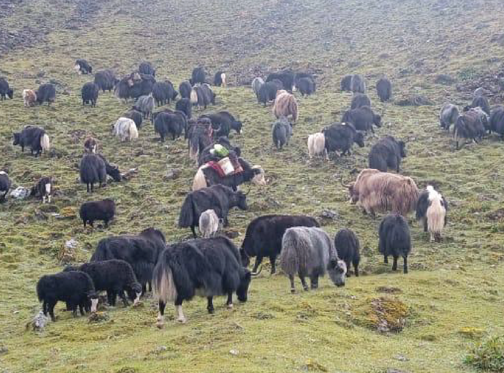
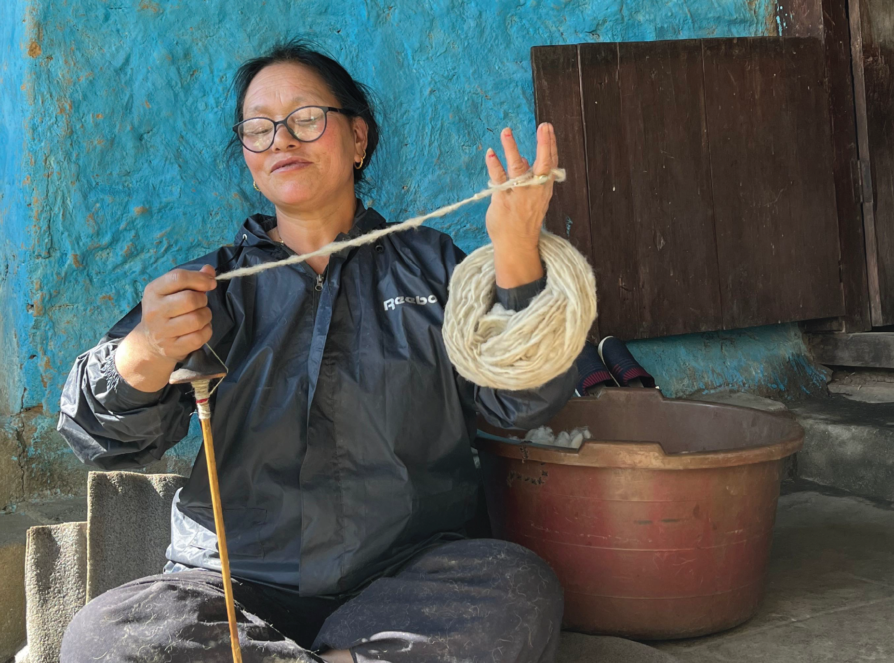

.jpeg)

Led the documentation and diversification of yak hair craft and traditional wet felting practices among the Brokpa community of Arunachal Pradesh, as a design consultant for Its All Folk @itsallfolk. The project formed part of the UK-funded Darwin Initiative Biodiversity programme, Reviving Trans-Himalayan Rangelands: A Community-Led Vision for People and Nature, implemented in partnership with WWF India.
My work focused on documenting traditional knowledge systems, material culture, and craft processes connected to yak herding livelihoods.
An excerpt from the documentation:
“In the western region of Arunachal Pradesh, bordered by Bhutan and China (Tibet), lies a high sierra inhabited by the Brokpas, a semi-nomadic community whose livelihood revolves around yak herding. The yaks, essential to their existence, provide wool, milk, and meat, and are central to their culture and economy. The Brokpas migrate seasonally with their herds, ascending to higher altitudes in summer and descending in winter, ensuring the well-being of both herds and humans. Concentrated in the West Kameng and Tawang districts, they sustain themselves and neighboring communities like the Monpas with dairy products.
Tsering Dondup, a Brokpa from Mago, values his yaks deeply and finds it difficult to part with them despite his advancing age. Yak herding also involves practical challenges, such as trimming yak hair during the monsoon season. Nima Norbu and Phurpa Chhojom, a married Brokpa couple, spend most of their year migrating with their herd, making cheese (chura) and gathering timber and yak dung. The Brokpas’ relationship with the yak reflects ethical stewardship, consuming yak meat only upon the animal’s natural death and using traditional remedies like Chanduk to care for their yaks in times of illness. This deep connection with their environment ensures the health and sustainability of their herds.”
“In the western region of Arunachal Pradesh, bordered by Bhutan and China (Tibet), lies a high sierra inhabited by the Brokpas, a semi-nomadic community whose livelihood revolves around yak herding. The yaks, essential to their existence, provide wool, milk, and meat, and are central to their culture and economy. The Brokpas migrate seasonally with their herds, ascending to higher altitudes in summer and descending in winter, ensuring the well-being of both herds and humans. Concentrated in the West Kameng and Tawang districts, they sustain themselves and neighboring communities like the Monpas with dairy products.
Tsering Dondup, a Brokpa from Mago, values his yaks deeply and finds it difficult to part with them despite his advancing age. Yak herding also involves practical challenges, such as trimming yak hair during the monsoon season. Nima Norbu and Phurpa Chhojom, a married Brokpa couple, spend most of their year migrating with their herd, making cheese (chura) and gathering timber and yak dung. The Brokpas’ relationship with the yak reflects ethical stewardship, consuming yak meat only upon the animal’s natural death and using traditional remedies like Chanduk to care for their yaks in times of illness. This deep connection with their environment ensures the health and sustainability of their herds.”